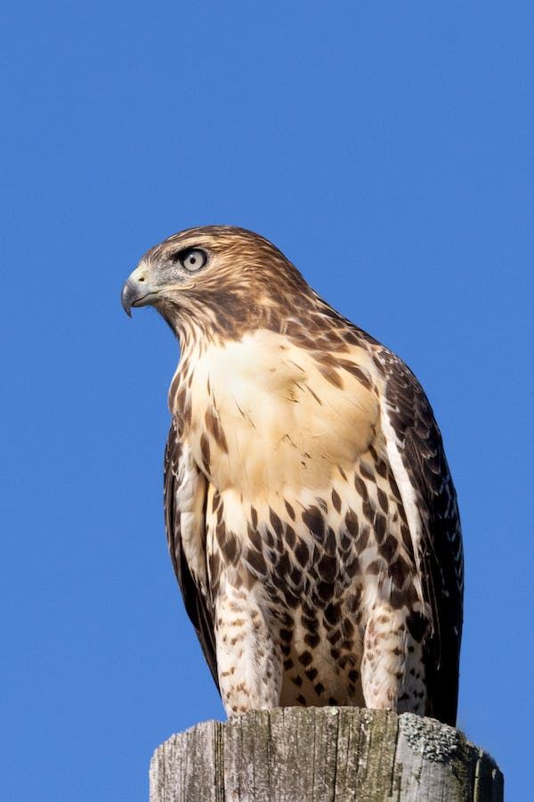
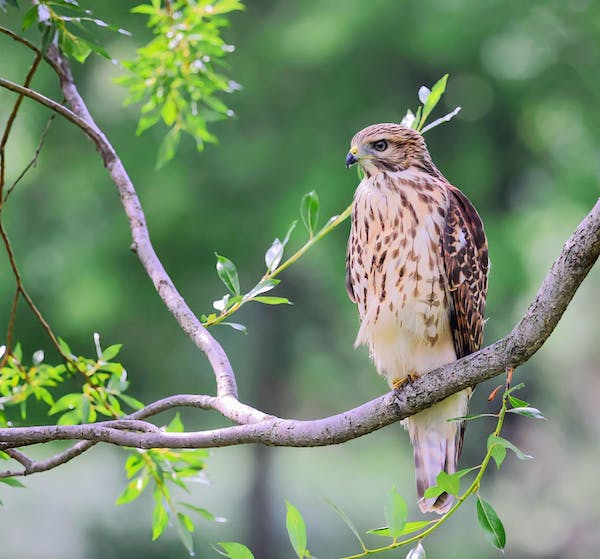
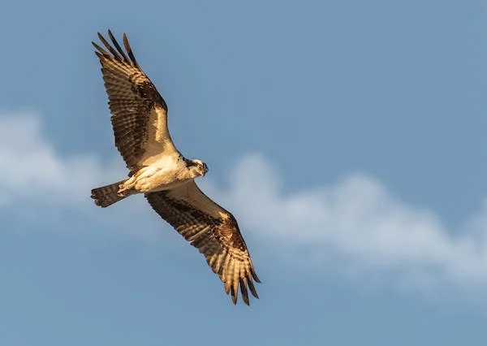
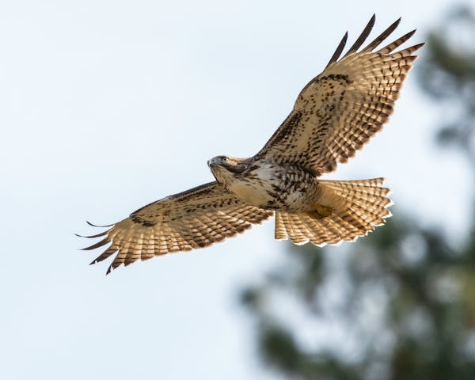

Red-Tailed Hawk
Description
Red-tailed hawk plumage can be variable, depending on the subspecies and the region. These color variations are morphs, and are not related to molting. Most adult red-tails have a dark-brown nape and upper head, which gives them a somewhat hooded appearance, while the throat can variably present a lighter brown "necklace". Especially in younger birds, the underside may be otherwise covered with dark-brown spotting, and some adults may too manifest this stippling.
The back is usually a slightly darker brown than elsewhere with paler scapular feathers, ranging from tawny to white, forming a variable imperfect "V" on the back. The tail of most adults, which gives this species its name, is rufous brick-red above with a variably sized, black subterminal band and generally appears light buff-orange from below. In comparison, the typical pale immatures (i.e. less than two years old) typically have a mildly paler headed and tend to show a darker back than adults with more apparent pale wing-feather edges above.
Identification
Although they overlap in range with most other American diurnal raptors, identifying most mature red-tailed hawks to species is relatively straightforward, particularly if viewing a typical adult at a reasonable distance. The red-tailed hawk is the only North American hawk with a rufous tail and a blackish patagium marking on the leading edge of its wing.
Vocalization
The cry of the red-tailed hawk is a 2- to 3-second, hoarse, rasping scream, variously transcribed as kree-eee-ar, tsee-eeee-arrr or sheeeeee that begins at a high pitch and slurs downward. The fierce, screaming cry of the adult red-tailed hawk is frequently used as a generic raptor sound effect in television shows and other media, even if the bird featured is not a red-tailed hawk. It is especially used in depictions of the bald eagle, which contributes to the common misconception that it is a bald eagle cry; actual bald eagle vocalizations are far softer and more chirpy than those of a red-tailed hawk.
Taxonomy
The red-tailed hawk is a member of the subfamily Buteoninae, which includes about 55 currently recognized species. Diverse in plumage appearance, habitat, prey, and nesting preferences, buteonine hawks are nonetheless typically medium- to large-sized hawks with ample wings (while some fossil forms are very large, larger than any eagle alive today).
The red-tailed hawk is a member of the genus Buteo, a group of medium-sized raptors with robust bodies and broad wings. Members of this genus are known as "buzzards" in Eurasia, but "hawks" in North America. Under current classification, the genus includes about 29 species, the second-most diverse of all extant accipitrid genera behind only Accipiter.
Subspecies
At least 14 recognized subspecies of B. jamaicensis are described, which vary in range and in coloration. Not all authors accept every subspecies, though, particularly some of the insular races of the tropics (which differ only slightly in some cases from the nearest mainland forms) and particularly Krider's hawk, by far the most controversial red-tailed hawk race, as few authors agree on its suitability as a full-fledged subspecies.
Subspecies Listed
- Jamaican red-tailed hawk
- Alaska red-tailed hawk
- Eastern red-tailed hawk
- Western red-tailed hawk
- Central American red-tailed hawk
- Southern red-tailed hawk
- Tres Narias red-tailed hawk
- Mexican Highlands red-tailed hawk
Behavior
The red-tailed hawk is highly conspicuous to humans in much of its daily behavior. Most birds in resident populations, which are well more than half of all red-tailed hawks, usually split nonbreeding-season activity between territorial soaring flight and sitting on a perch. Often, perching is for hunting purposes, but many sit on a tree branch for hours, occasionally stretching on a single wing or leg to keep limber, with no signs of hunting intent.
Flight
In flight, this hawk soars with wings often in a slight dihedral, flapping as little as possible to conserve energy. Soaring is by far the most efficient method of flight for red-tailed hawks, so is used more often than not. Active flight is slow and deliberate, with deep wing beats. Wing beats are somewhat less rapid in active flight than in most other Buteo hawks, even heavier species such as ferruginous hawks tend to flap more swiftly, due to the morphology of the wings.
Migration
Red-tailed hawks are considered partial migrants, as in about the northern third of their distribution, which is most of their range in Canada and Alaska, they almost entirely vacate their breeding grounds. In coastal areas of the north, however, such as in the Pacific Northwest to southern Alaska and in Nova Scotia on the Atlantic, red-tailed hawks do not usually migrate. ore or less, any area where snow cover is nearly continuous during the winter shows an extended absence of most red-tailed hawks, so some areas as far south as Montana may show strong seasonal vacancies of red-tails.
Habitat
Red-tailed hawks have shown the ability to become habituated to almost any habitat present in North and Central America. Their preferred habitat is mixed forest and field, largely woodland edge with tall trees or alternately high bluffs that may be used as nesting and perching sites. They occupy a wide range of habitats and altitudes, including deserts, grasslands, nearly any coastal or wetland habitat, mountains, foothills, coniferous and deciduous woodlands, and tropical rainforests.
The Woods
The woods provide nesting grounds for these large birds, as well. Secretive and solitary nesters, red-tailed hawks prefer to nest in thick, upland hardwood forests. They may use an old raptor nest as a base, or build a nest they may use and improve on year after year. Red-tails build a bulky nest of sticks 30 to 60 feet above the ground in the crotch of a tree, and they line it with moss, roots, grasses and other fine plant material.
Adaptions
Red-tailed hawks like a mix of open country and deciduous forests, but they adapt to urban areas. Generally, they prefer the woods for nesting and roosting, and the fields for feeding. As day breaks, the hawks move to the woodland edge to perch and to soar. Red-tailed hawks frequently can be seen perching on telephone poles, tall trees or snags along roadsides. They sit high mainly to rest, but constantly keep watch for the slightest movement down below. To feed,they primarily soar up to 200 to 300 feet above open areas, scanning for favorite foods such as rodents, rabbits, amphibians, reptiles and insects. Often described as beautiful in flight, redtailed hawks have been observed soaring for hours without coming to a rest.
Diet
he red-tailed hawk is carnivorous, and a highly opportunistic feeder. Nearly any small animal they encounter may be viewed as potential food. Their most common prey are small mammals such as rodents and lagomorphs, but they also consume birds, reptiles, fish, amphibians, and invertebrates. Prey varies considerably with regional and seasonal availability, but usually centers on rodents, accounting for up to 85% of a hawk's diet.
Birds
Red-tailed hawks do not primarily hunt birds in most areas, but can take them fairly often whenever they opportune upon some that are vulnerable. Birds are, by far, the most diverse class in the red-tailed hawk’s prey spectrum, with well over 200 species known in their foods.
Mammals
Rodents are certainly the type of prey taken most often by frequency, but their contribution to prey biomass at nests can be regionally low, and the type, variety, and importance of rodent prey can be highly variable. In total, well over 100 rodent species have turned up the diet of red-tailed hawks.
Reproduction
Pairs either court for the first time or engage in courtship rituals to strengthen pre-existing pair bonds before going into the breeding. The breeding season usually begins in late February through March, but can commence as early as late December in Arizona and late January in Wisconsin or to the opposite extreme as late as mid-April as in Alberta. In this pre-nesting period, high-circling with much calling will occur.
One or both members of a pair may be involved. The courtship display often involves dangling legs, at times the pair will touching each other's wings and male's feet may touch female's back, she may occasionally roll over and present talons.
Nests
The pair constructs a stick nest most often in a large tree 4 to 21 m (13 to 69 ft) off the ground. They may too nest on virtually any man-made structures with some variety of ample ledges or surface space and good views of the surrounding environment (i.e. powerline poles, radio transmission towers, skyscraper buildings). Much variation is recorded in nest usage behavior, many red-tails build new nests every year despite prior nests sometimes being in good standing and unoccupied, some may reuse a nest in subsequent years or may leave a nest for a year and then come back to it the following year.

Eggs
The eggs of red-tailed hawks are mostly white, sometimes with a faint buffy wash; at times the eggs manifest a sparsely or heavily marked with blotches of buff, pale reddish-brown, dark brown, or purple. The markings often appear indistinctly and may combine to form a fine speckling. They are incubated primarily by the female, with the male substituting when she leaves to hunt or merely stretch her wings.